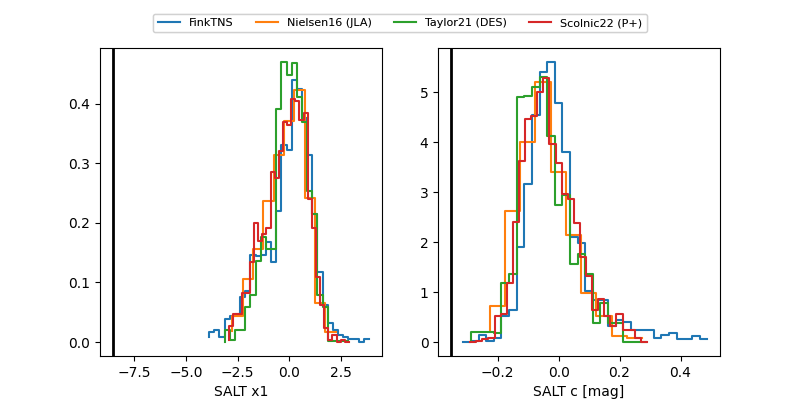

FINK: ZTF25abpjpmb
Lasair: ZTF25abpjpmb
ALeRCE: ZTF25abpjpmb
ZTF25abpjpmb (ztf,fink)
equatorial (ra, dec) = (261.4774,-8.03246)
galactic (l, b) = (15.5304,+14.92633)

last atlasc=18.27, atlaso=18.84, ztfg=19.42
1 atlasc, 5 atlaso, 6 ztfg detections